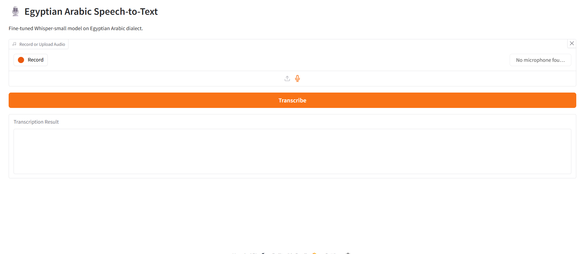

End-to-end machine learning across speech recognition, computer vision, generative AI, and biomedical signal processing — from raw, noisy data to a system that ships and actually generalizes.
I'm an AI & Data Science undergraduate at Egypt-Japan University of Science & Technology, working across NLP, computer vision, generative AI, and biomedical signal processing. I care about the parts most people skip — preprocessing, feature engineering, and evaluating with the metric that actually matters for the domain, not just accuracy: WER and CER for speech, FID for generative fidelity, AUC-ROC and F1 for classification, R² for regression.
I'm proficient in Python, PyTorch, and Scikit-learn, and I've shipped full pipelines end to end — fine-tuned models deployed live on HuggingFace Hub, dashboards in production, MLOps loops with automated checkpointing. Currently looking for a Junior AI/ML Engineer internship to bring that same rigor to real products.

Fine-tuned OpenAI Whisper-small on 15,000 Egyptian Arabic samples with Seq2SeqTrainer, cosine LR, fp16, gradient checkpointing, and early stopping. Diacritization removal, alif normalization, and SpecAugment in the preprocessing pipeline. Deployed to HuggingFace Hub with a live Gradio demo for mic and file transcription.
A hybrid CNN + Bidirectional LSTM built from scratch with CTC loss for character-level Arabic ASR. 120-dim MFCC + delta + delta-delta features with FIR filtering and Z-score normalization. Full MLOps loop: Drive checkpointing via rclone, automatic HF uploads on best validation loss, OneCycleLR, gradient clipping.
An 8-class blood cell classifier across 1,600 images. Benchmarked 8 CNN architectures as frozen feature extractors, fusing deep features with handcrafted LBP, GLCM, and RGB+HSV histograms via PCA + SelectKBest. Segmentation pipeline: bilateral filtering, CLAHE, Otsu thresholding, Watershed.
A Latent Diffusion Model (U-Net / Stable Diffusion architecture) trained to synthesize clinically realistic pneumonia chest X-rays, addressing medical training data scarcity. Evaluated with FID and clinical fidelity metrics, then measured the downstream classifier lift from synthetic augmentation.
Identified 109 subjects from resting-state EEG using a CNN + LSTM hybrid trained on STFT spectrograms from the PhysioNet dataset. Full DSP pipeline: FIR bandpass (1–40 Hz), epoch segmentation, Z-score normalization, STFT time-frequency extraction.
Classification and regression pipelines (MLP, Decision Tree, KNN) forecasting solar PV output from meteorological sensor data. PCA, SVD, and LDA for dimensionality reduction, with feature significance validated via ANOVA and T-tests.